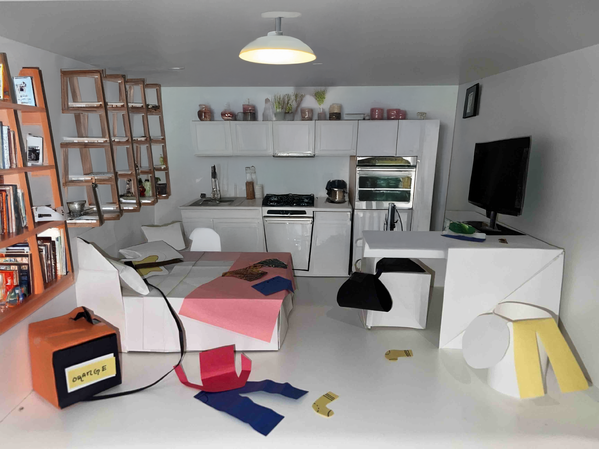

A visual timeline of a typical day in my life, this piece charts everything from waking up to winding down. I structured the flow to mimic how time feels rather than how it’s measured. It feels disjointed, fast, screen-heavy, and occasionally still. It's an intimate look at my routines and habits, with a focus on how digital life shapes them.
Creative Overload
Digital Illustration
This self-portrait captures the chaos and creativity of my workspace. It’s an honest depiction of what it looks like when I'm deep in my work flow surrounded by clutter, tabs, and ideas. I wanted to reflect how overwhelming but rewarding the creative process can feel when inspiration, deadlines, and distractions collide.
A Brave and Startling Truth
Short Film (Video Editing, Sound Design, Found Footage)
A personal interpretation of Maya Angelou’s poem A Brave and Startling Truth, composed from raw video clips collected throughout the past year. The film overlays moments of stillness, motion, and solitude with my original bass guitar composition. It explores the quiet beauty of the mundane and how truth reveals itself in everyday gestures.
Cut & Construct: My Bedroom Reimagined

Physical Paper Model with AI-Enhanced Photography
A three-dimensional paper model of my bedroom created by hand using scissors, tape, and repurposed materials. I used AI image tools to enhance the visual atmosphere. This piece reflects my relationship with personal space, identity, and the environments where creativity happens—even in clutter or chaos. It also introduces the slow and unnoticable intergration of AI in our lives, especially as designers and artists.
Keep Pushing
Collage Pastel Drawing
This piece captures a moment of motion and self-expression through the act of skateboarding. Using realistic pastel techniques for the figure, I introduced elements of abstraction by cutting out and replacing myself with bold red paper, shifting the original figure slightly to the right. The black paper road anchors the composition, contrasting with the fluidity of the movement. The combination of realism and collage reflects the balance between the grounded reality of my personal experience and the dynamic energy of skateboarding, where each ride feels like a blend of control and freedom.
Reflection
These projects have allowed me to weave narratives not just through words, but through visual storytelling, each piece telling a personal experience. "Scrolling Through Time" tells the story of my day, not in a linear sense but through time capturing moments of fast-paced digital life and quiet stillness. "Creative Overload" reflects the narrative of the creative process following the inspiration, deadlines, and distractions that come with being a designer. "A Brave and Startling Truth" takes a more abstract approach, using video and sound to tell a story about truth and beauty emerging from the everyday, with the stillness of the mundane providing the most profound moments. "Cut & Construct" is a narrative of identity and space, showing how technology like AI, becomes part of our stories, shaping how we interact with the world. Finally, "Keep Pushing" is a story of motion and freedom, blending realism with abstraction to show the dynamic and unpredictable nature of self-expression. Through these pieces, I’ve explored how stories can be told in multiple forms, using visual elements to capture the complexity and depth of human experience.